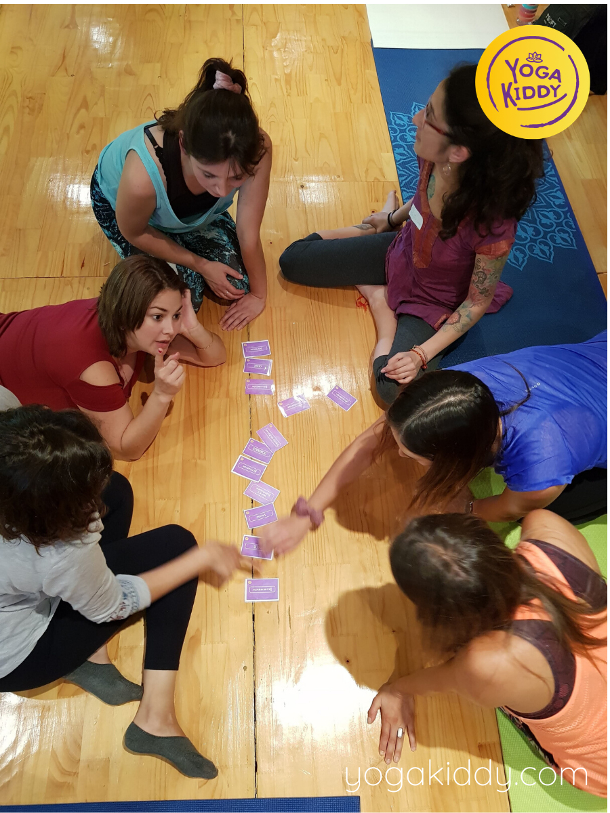
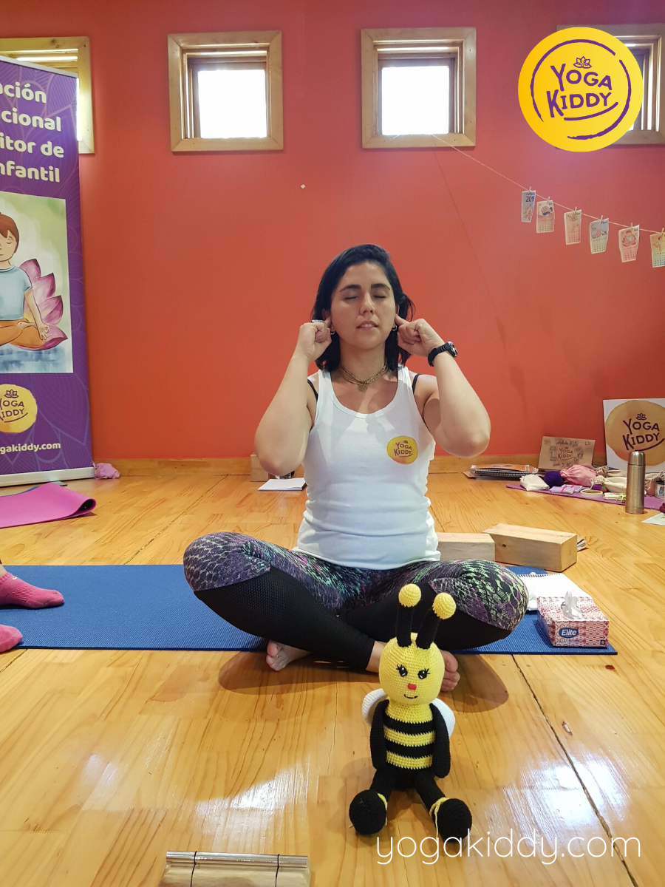
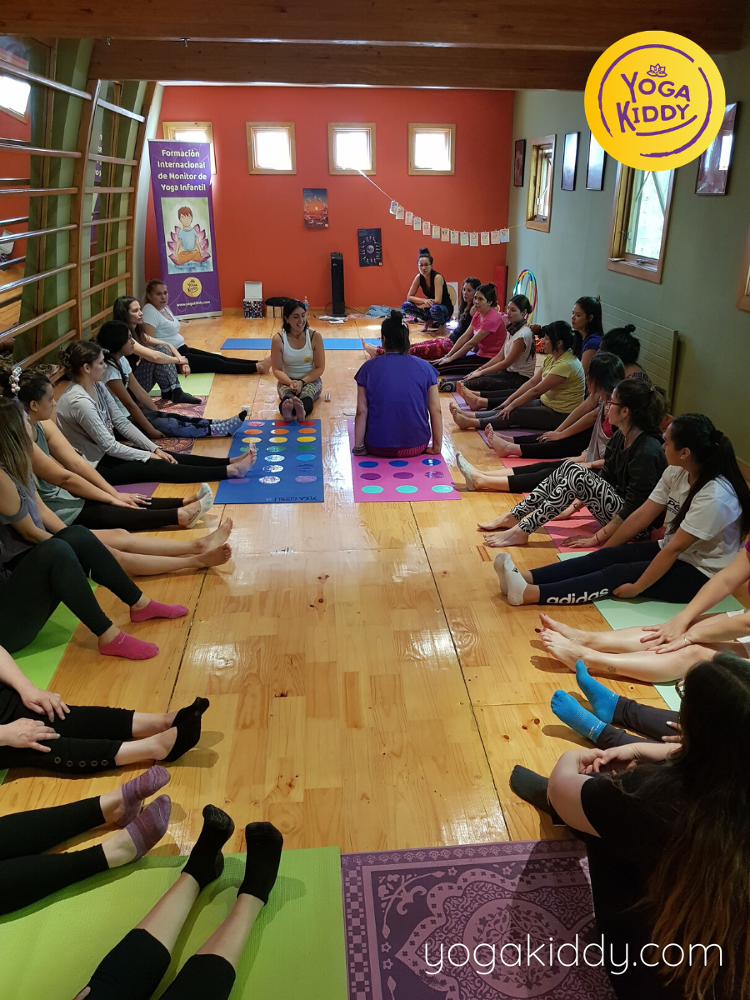
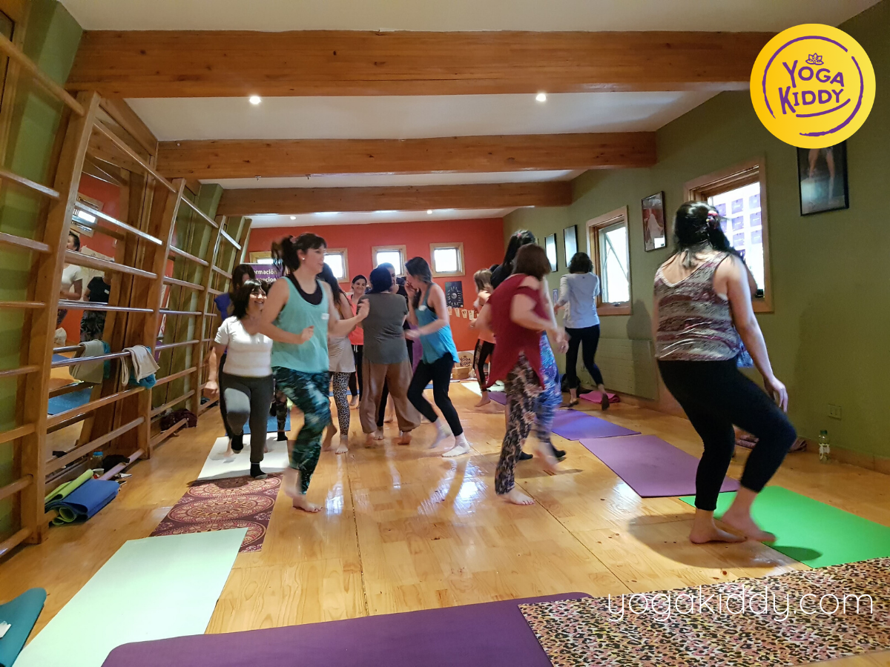
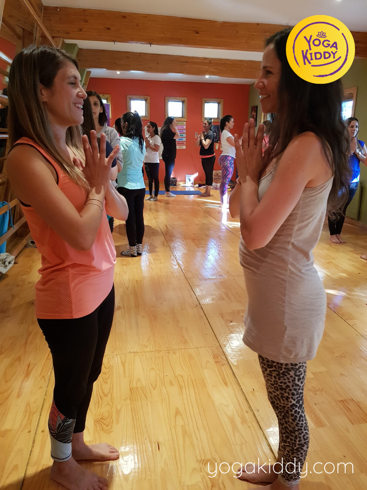
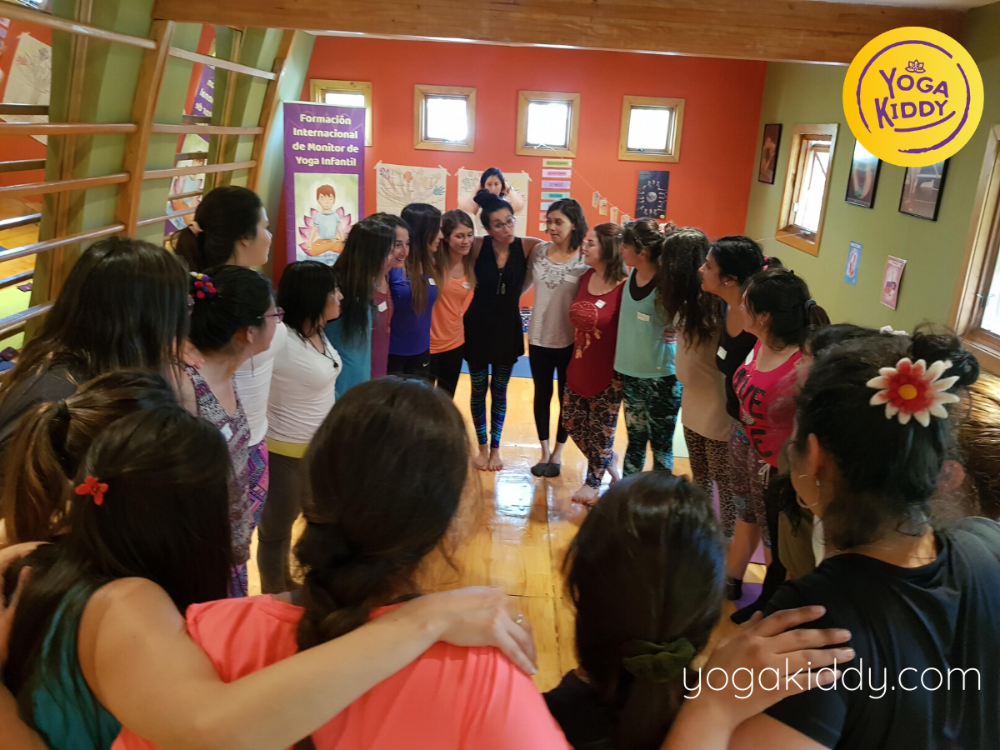
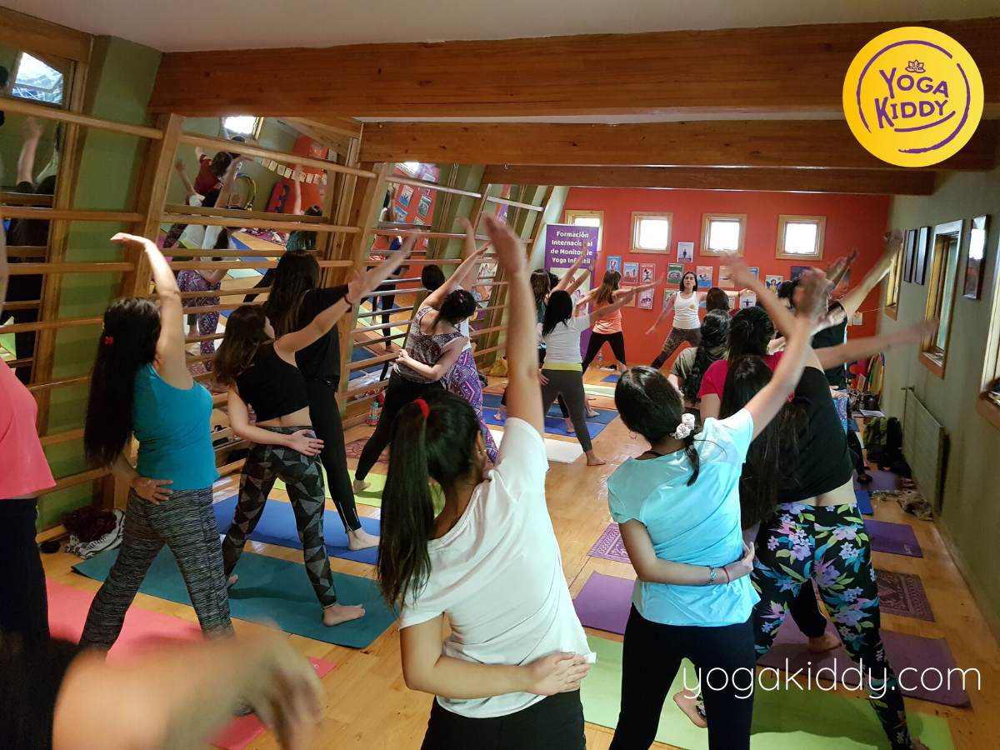
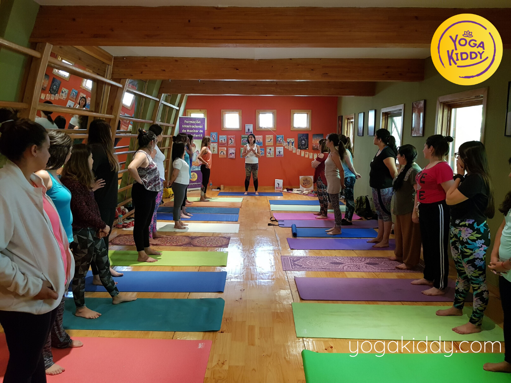
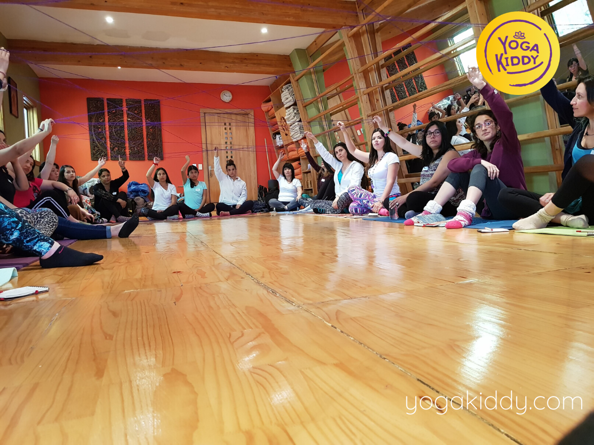
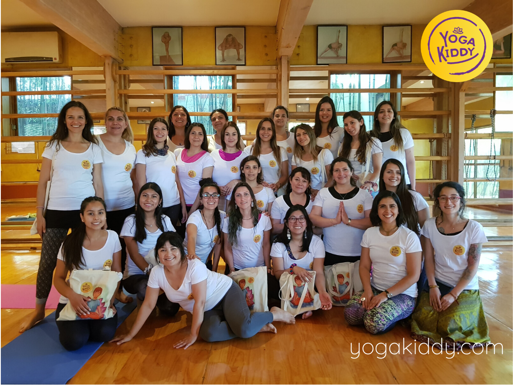

Santiago de Chile volvió a reunirnos los días 15 y 16 de Diciembre de 2018 para reflexionar nuevamente sobre la responsabilidad de nuestra labor con y para la infancia🧘♂️🧘♀️
*
Gracias a este bello grupo fue posible! Agradecemos a todos ellos que se vincularon y detectaron la importancia de cuidar nuestras acciones para que estas tengan trascendencia.🙏💜










Me siento sumamente feliz de haber compartido estos dos días con yogaKiddy, la verdad que fue una experiencia inimaginable, el haber adquirido herramientas y haber trabajado desde el niño de cada uno. La oportunidad de haberme conectado y haber jugado como eso que somos niños fue realmente mágico. Agradezco infinitamente a YogaKiddy por la oportunidad